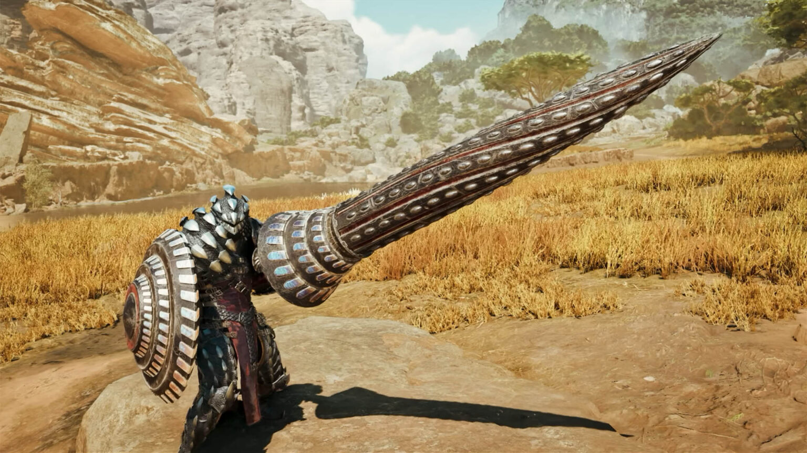

Welcome to Monster Hunter Wilds
Monster Hunter Wilds takes players into a stunning and dynamic world where survival is a way of life. Set in an expansive wilderness, players step into the boots of a skilled hunter tasked with defending the natural balance by tracking down colossal monsters that threaten the fragile ecosystem.
A Story of Balance and Survival
The core narrative centers around the struggle between the natural world and the threats posed by monstrous creatures. As a member of an elite guild of hunters, players will discover ancient secrets hidden deep within the wilderness. The story evolves as you uncover why these monsters are becoming increasingly hostile and what ancient powers may be manipulating them.

Key Features
- Dynamic Ecosystem: Experience a living world where every action has consequences.
- Epic Monster Hunts: Engage in thrilling battles against massive creatures, each with unique behaviors and weaknesses.
- Crafting and Customization: Gather resources to craft weapons, armor, and items tailored to your playstyle.
- Multiplayer Co-op: Team up with friends or other players to take down the most formidable monsters.
An Epic Adventure Awaits
Unlike previous entries in the Monster Hunter franchise, Wilds introduces an open-world environment with no loading screens between regions, making the world feel alive and seamless. Explore vast biomes, ranging from lush forests to desolate deserts, each home to unique creatures, resources, and challenges.